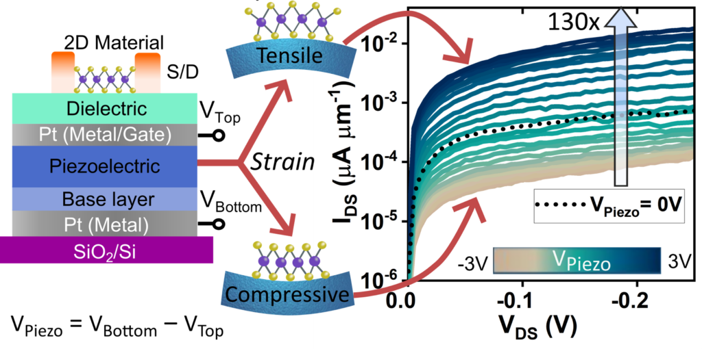
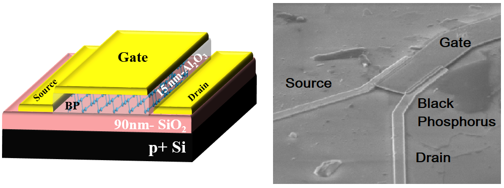
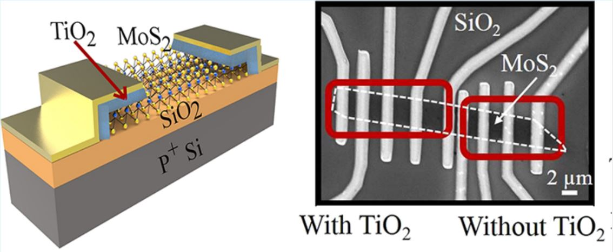
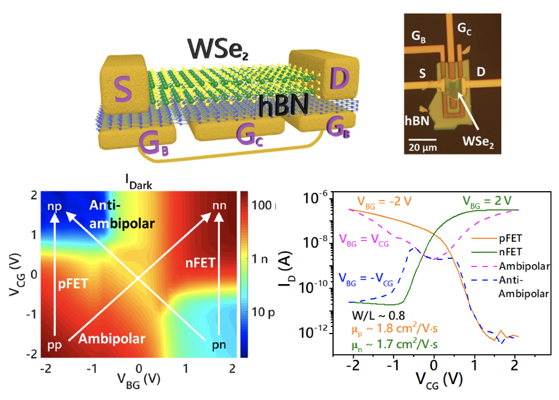
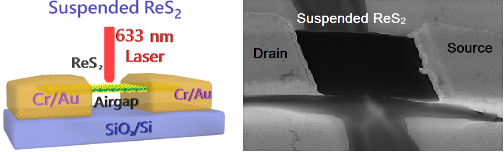
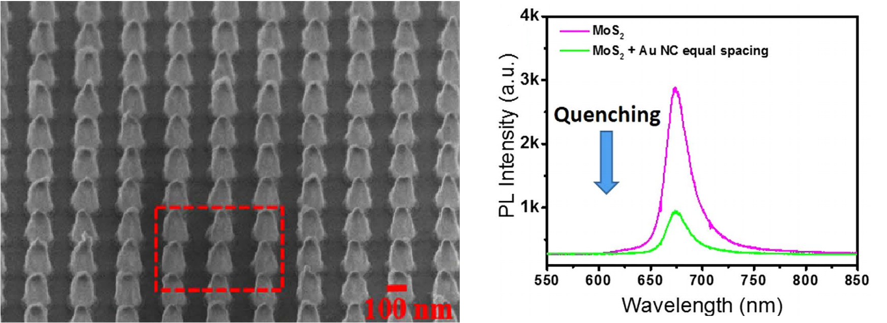
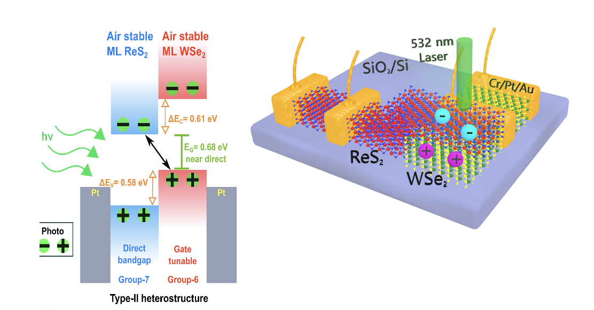
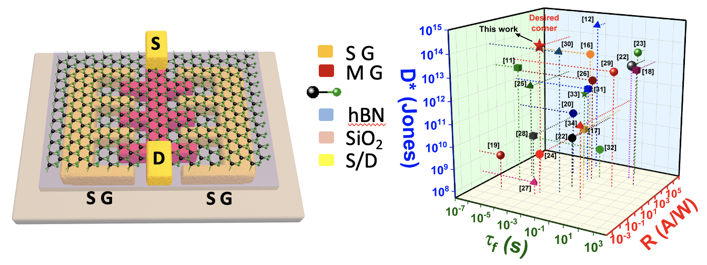

(A) Emergent Phenomena:
The unique structure of 2D materials brings about novel phenomena that are not present or not easily attained in traditional silicon devices. We recently showed neuron circuits [1] and electrically controlled strain engineering [2] in MoS2 transistors.

Key publications:
- K. Thakar et al., “Ultra-Low Power Neuromorphic Obstacle Detection Using a 2D Materials-Based Subthreshold Transistor”, npj 2D Materials and Applications, 7, 68 (2023). Link
- A. Varghese et al., “Electrically-controlled High Sensitivity Strain Modulation in MoS2 FETs via a Piezoelectric Thin Film on Silicon Substrates”, Nano Letters, 24 (28), 8472–8480 (2024). Link
(B) Electronic Transport:
We are interested in electrical transport properties of van der Waals (vdW) semiconductors such as MoS2, black phosphorous and WSe2. Specifically, we have studied contact resistance [1, 2], doping [3], ambient stability [4], and gate oxide-related hysteresis [5, 6], noise [7], and reliability [8] in field-effect transistors with 2D vdW semiconductor channels.
 
More recently, we have been interested in exploring electrostatically tunable and reconfigurable transport modes varying from n, p, ambipolar and antiambipolar, along with their applications, in multi-gated WSe2 channels [9].

Key publications:
- N. Kaushik et al., “Schottky Barrier Heights for Au and Pd Contacts to MoS2”, Applied Physics Letters, 105, 113505 (2014). Link
- N. Kaushik et al., “Interfacial n-Doping using an Ultra-Thin TiO2 Layer for Contact Resistance Reduction in MoS2”, ACS Applied Materials and Interfaces, 8 (1), pp 256–263 (2016). Link
- A. Nipane et al., “Few-Layer MoS2 p-Type Devices Enabled by Selective Doping Using Low Energy Phosphorus Implantation”, ACS Nano, 10 (2), pp. 2128–2137 (2016). Link
- N. Goyal et al., “Enhanced Stability and Performance of Few-Layer Black Phosphorus Transistors by Electron Beam Irradiation”, Nanoscale, vol. 10, issue 24, pp. 11616-11623 (2018). Link
- N. Kaushik et al., “Reversible Hysteresis Inversion in MoS2 Field Effect Transistors”, Nature 2D Materials and Applications, 1 (1), 34 (2017). Link
- H. Jawa et al., “Electrically Tunable Room Temperature Hysteresis Crossover in Underlap MoS2 FETs”, ACS Applied Materials and Interfaces, 13, 7, 9186–9194 (2021). Link
- N. Kaushik et al., “Low-Frequency Noise in Supported and Suspended MoS2 Transistors”, IEEE Transactions on Electron Devices, 65 (10), 4135-4140 (2018). Link
- N. Goyal et al., “Ultra-fast Characterization of Hole Trapping Near Black Phosphorus (BP)/SiO2 Interface During NBTI Stress in 2D BP p-FETs,” (Invited Paper) IEEE Transactions on Electron Devices, 66 (11), 4572-4577 (2019). Link
- K. Thakar et al., ““Multi-Bit Analog Transmission Enabled by Electrostatically Reconfigurable Ambipolar and Anti-Ambipolar Transport”, ACS Nano, 15 (12), 19692-19701 (2021). Link
(C) Optoelectronic Devices:
Atomically thin vdW semiconductors with direct bandgap and enhanced light-matter interaction are attractive candidates for low-power, ultrasensitive and flexible optoelectronic devices. Towards this end, we have investigated their optoelectronic performance from both material and device perspectives. For example, we have shown that the photoluminescence intensity can be selectively enhanced or quenched in pristine single-layer MoS2 by coupling it with plasmonic arrays of different geometries [1].
 
Most of our recent work has focussed on understanding and alleviating the fundamental trap-based tradeoff between photoresponsivity and speed in vdW photodetectors. We have demonstrated this tradeoff in supported and suspended ReS2 photodetectors [2] and shown a possible path to attenuate this tradeoff by 2x using a lateral, electrostatically controlled p-n junction in WSe2 phototransistors [3]. We have demonstrated a near indirect interlayer IR bandgap in WSe2/ReS2 type-II heterostructure photodetectors with excellent photovoltaic performance [4]. Recently we have demonstrated ultra-high negative photoresponsivity (NPC) with fast switching in WSe2/SnSe2 tunnel photodiodes [5] and wavelength-dependent NPC in BP/MoS2 heterostructures [6].
 
Key publications:
- B. Mukherjee et al., “Exciton Emission Intensity Modulation of Monolayer MoS2 via Au Plasmon Coupling”, Scientific Reports, 7, 41175 (2017). Link
- K. Thakar et al., “Multilayer ReS2 Photodetectors with Gate Tunability for High Responsivity and High-Speed Applications”, ACS Applied Materials and Interfaces, 10, 42, 36512 (2018). Link
- S. Ghosh et al., “Enhanced responsivity and detectivity of fast WSe2 phototransistor using electrostatically tunable in-plane lateral p-n homojunction”, Nature Communications 12 (1), 1-9 (2021). Link
- A. Varghese et al., “Near-direct bandgap WSe2/ReS2 type-II pn heterojunction for enhanced ultrafast photodetection and high-performance photovoltaics”, Nano Letters, 20, 3, 1707-1717 (2020). Link
- S. Ghosh et al., “Polarity-Tunable Photocurrent through Band Alignment Engineering in a High-Speed WSe2/SnSe2 Diode with Large Negative Responsivity”, ACS Nano, 16, 3, 4578–4587 (2022). Link
- H. Jawa et al., “Wavelength-Controlled Photocurrent Polarity Switching in BP-MoS2 Heterostructure”, Advanced Functional Materials, 32 (25), 2112696 (2022). Link